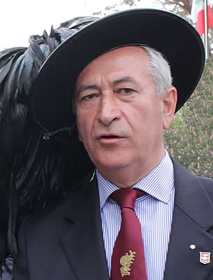

Presidente Nazionale in Carica
Giuseppenicola TOTA

è nato a Corato (BARI) il 4 maggio 1960.Ha frequentato dal 1979 l'Accademia Militare ( 161° corso ESEMPIO ) e poi la Scuola di Applicazione uscendone nel 1983 Tenente dei bersaglieri.
Ha frequentato il Corso Superiore di Stato Maggiore e l'Istituto Superiore di Stato
Maggiore Interforze in Italia nonché l'Army War College e poi il Defence Resource
Management Course presso la Naval Postgraduate School negli Stati Uniti d'America.
Ha conseguito la laurea ed il master in Scienze Strategiche nonché il master in Pubblica
Informazione.
Ha svolto incarichi di comando di plotone e di compagnia presso il 3o battaglione
bersaglieri Cernaia (Divisione Ariete – Brigata Garibaldi) in Pordenone, dove è stato anche
Capo sezione OAI, e presso l'Accademia Militare.
Nel 1997 in Sarajevo è stato Capo Cellula e National Liaison Officer per la Pubblica
Informazione con il Comando Brigata GARIBALDI nell'ambito dell'Operazioni SFOR.
Nel periodo 1998-99 ha comandato il 3o battaglione bersaglieri con il quale ha partecipato
all'Operazione JOINT GUARANTOR in FYROM comandando il Contingente Italiano
nell'ambito della Extraction Force della NATO nel momento dell'intervento internazionale
per la soluzione della crisi del Kosovo.
Ha comandato il 18° reggimento bersaglieri che nel gennaio 2005 ha cambiato
denominazione in 1o reggimento bersaglieri al cui comando è stato impegnato nel 2006
nell'Operazione ANTICA BABILONIA 10 chiudendo l'impegno italiano in Iraq. Al termine
della missione la Bandiera di Guerra del reggimento è stata decorata dell'Ordine Militare
d'Italia.
Al comando della Brigata GARIBALDI nel 2010 è stato schierato nel Sud del Libano quale
Comandante del Sector West / Joint Task Force Lebanon.
Dal 2012 al 2014 ha comandato l'Accademia Militare in Modena.
Nel 2018 è stato nominato Generale di Corpo d'Armata, e sino al 2020 è stato il Comandante
delle Forze Operative Terrestri di supporto in Verona e dal 2 ottobre 2020 all'8 giugno 2023
delle Forze Operative Sud con sede in Napoli.
Presso lo Stato Maggiore dell'Esercito è stato:
– dapprima nell'area della comunicazione e del marketing nell'ambito della quale ha
diretto le iniziative dell'Esercito a sostegno dei reclutamenti dei primi volontari e delle
prime delle donne. Importante è stata nel periodo anche l'esperienza della gestione per
diversi anni del numero verde per la qualità della vita e della creazione del sito internet
dell'Esercito;
− poi nell'area delle operazioni e dell'addestramento come Vice Capo e Capo del III
Reparto;
− quindi Capo del V Reparto Affari Generali.
Nello Stato Maggiore della Difesa è stato Capo Ufficio nell'Ufficio Generale del Capo di
Stato Maggiore.
Grand'Ufficiale al Merito della Repubblica Italiana, ha meritato, tra le altre decorazioni, la
Medaglia d'Oro di lungo Comando, una Croce d'Oro (IRAQ) e due d'Argento al Merito
dell'Esercito (FYROM e Libano). Ha ricevuto decorazioni da Francia, Libano, Romania,
Slovenia e Stati Uniti d'America.
Gli è stato conferito il Domenico Chiesa Award dal Panathlon International, il Melvin
Jones Fellow dal Lions Clubs International Foundation, i premi Enrico Toti e Bonifacio
VIII. Nel 2018 l'Associazione Nazionale Arma di Cavalleria gli ha conferito il titolo di
Cavaliere d'onore.
È Ambasciatore dell'Aceto balsamico nel Mondo ed è stato eletto, nel 2014, Modenese
dell'anno da un sondaggio della Gazzetta di Modena.
Ha pubblicato articoli e analisi di carattere storico militare tenendo lezioni di storia e di
leadership presso Istituti militari e civili. Ha elaborato il primo manuale della pubblica
informazione dell'Esercito.
Da settembre 2023 è consulente tecnico per la legge sulla specificità militare del sindacato
militare ITAMIL.
Animatore della Comunità Gesù risorto del Rinnovamento carismatico cattolico, è
conoscitore dell'antica Arte della costruzione dei muretti a secco, tipica delle Murge baresi,
appresa dal coratino "mest" Domenico Maggiulli.
Ama riparare le bici che, quando funzionanti, guida anche fuoristrada.
È convintamente sposato con la Signora Mariadele con cui ha tre figli: Giandomenico,
Marcella e Marina.
Dall'8 giugno 2023 è in ausiliaria.